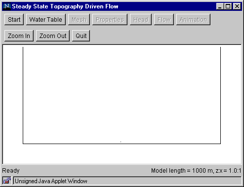

Step 1: Start
This step specifies the length of the flow domain.
- Click the "Start" button to bring up the Start
Dialog Box.
- Enter the model length (in meters) and the
vertical exaggeration. (For example, length = 1000 m, vertical
exaggeration = 1.)
- Click "OK".
The program draws the sides and the base of the flow domain.

Go to step 2
Return to Introduction
|